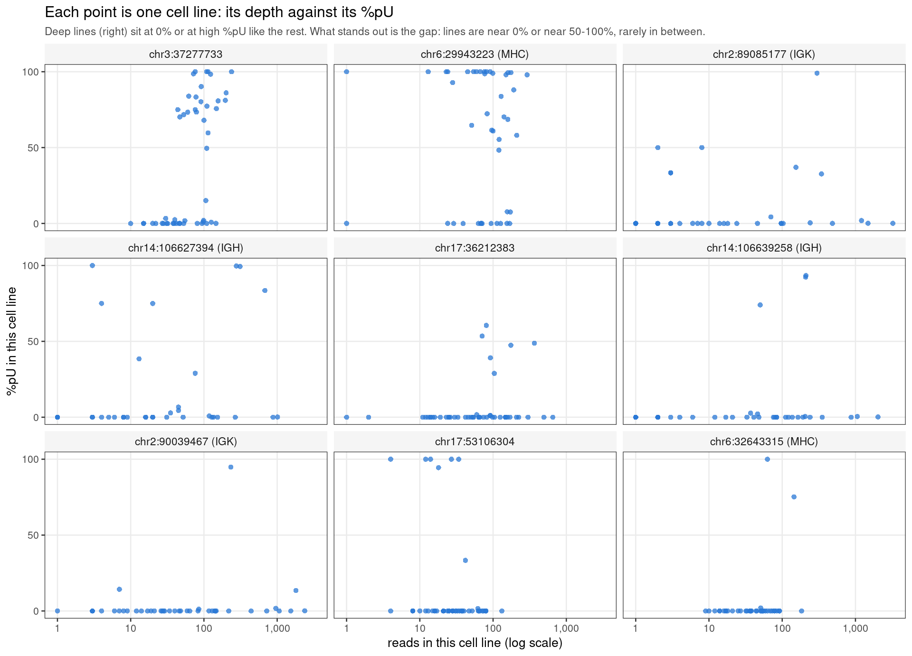
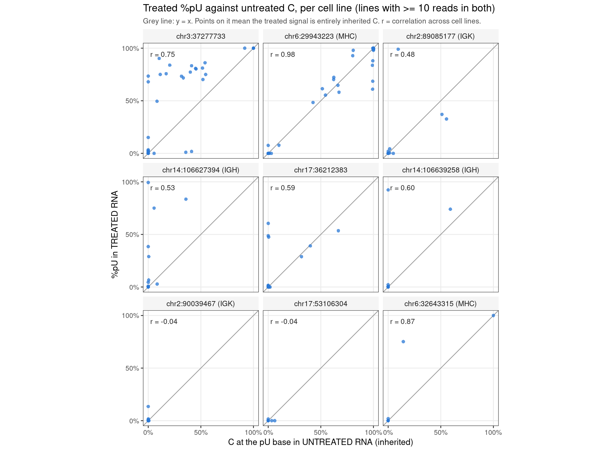

Last updated: 2026-09-29
Checks: 6 1
Knit directory: pumseq/
This reproducible R Markdown analysis was created with workflowr (version 1.7.0). The Checks tab describes the reproducibility checks that were applied when the results were created. The Past versions tab lists the development history.
The R Markdown is untracked by Git. To know which version of the R
Markdown file created these results, you’ll want to first commit it to
the Git repo. If you’re still working on the analysis, you can ignore
this warning. When you’re finished, you can run
wflow_publish to commit the R Markdown file and build the
HTML.
Great job! The global environment was empty. Objects defined in the global environment can affect the analysis in your R Markdown file in unknown ways. For reproduciblity it’s best to always run the code in an empty environment.
The command set.seed(20260202) was run prior to running
the code in the R Markdown file. Setting a seed ensures that any results
that rely on randomness, e.g. subsampling or permutations, are
reproducible.
Great job! Recording the operating system, R version, and package versions is critical for reproducibility.
Nice! There were no cached chunks for this analysis, so you can be confident that you successfully produced the results during this run.
Great job! Using relative paths to the files within your workflowr project makes it easier to run your code on other machines.
Great! You are using Git for version control. Tracking code development and connecting the code version to the results is critical for reproducibility.
The results in this page were generated with repository version 10b54c8. See the Past versions tab to see a history of the changes made to the R Markdown and HTML files.
Note that you need to be careful to ensure that all relevant files for
the analysis have been committed to Git prior to generating the results
(you can use wflow_publish or
wflow_git_commit). workflowr only checks the R Markdown
file, but you know if there are other scripts or data files that it
depends on. Below is the status of the Git repository when the results
were generated:
Ignored files:
Ignored: analysis/qtl_mapping_summary_cache/
Untracked files:
Untracked: analysis/qtl_mapping_betabinomial_problematic_sites_revisited.Rmd
Unstaged changes:
Modified: analysis/index.Rmd
Note that any generated files, e.g. HTML, png, CSS, etc., are not included in this status report because it is ok for generated content to have uncommitted changes.
There are no past versions. Publish this analysis with
wflow_publish() to start tracking its development.
suppressMessages({ library(data.table); library(ggplot2) })
knitr::opts_chunk$set(echo = TRUE, warning = FALSE, message = FALSE, fig.align = "center")
QB <- "/project/xinhe/xsun/pumseq/pumseq_processed/psi_qtl/qtl_betabinomial"
DF <- file.path(QB, "diagnostic_figures")
T <- fread(file.path(DF, "problematic_sites_stats.tsv"))
L <- fread(file.path(DF, "problematic_sites_by_line.tsv"))
PB <- fread(file.path(DF, "phi_band_untreated.tsv"))
GM <- T[sid == "GENOME-WIDE MEDIAN"]; T <- T[sid != "GENOME-WIDE MEDIAN"]
lab <- function(s) paste0("chr", sub(" ", ":", s))
T[, site := lab(sid)][, panel := ifelse(region == "-", site, paste0(site, " (", region, ")"))]
LV <- T$panel # one site order everywhere: old real -log10 p, highest first
L <- merge(L, T[, .(sid, panel)], by = "sid")[, panel := factor(panel, levels = LV)]
pc <- function(x) ifelse(is.na(x), "-", sprintf("%.0f%%", 100 * x))
f2 <- function(x) ifelse(is.na(x), "fit failed", formatC(x, format = "fg", digits = 2, flag = "#"))
BLUE <- "#2a78d6" # single series: one colour, no legend needed
thm <- theme_bw(base_size = 10) +
theme(panel.grid.minor = element_blank(), panel.grid.major = element_line(colour = "grey92"),
strip.background = element_rect(fill = "grey96", colour = NA), strip.text = element_text(size = 8.5),
plot.subtitle = element_text(size = 8.5, colour = "grey30"))
n_deep <- T[, sum(top1_share_reads >= 0.10)]
n_full <- T[, sum(high_lines_both > 0 & high_lines_inherited / high_lines_both >= 0.9)]
n_part <- T[, sum(high_lines_both > 0 & high_lines_inherited > 0 & high_lines_inherited / high_lines_both < 0.9)]
n_untst <- T[, sum(high_lines_both == 0)]
PB[, band := factor(band, levels = band)]
top <- PB[band == "> 0.5"]; low <- PB[band %in% c("< 1e-4", "1e-4 to 0.01")]The question. The φ-estimation work showed estimates collapsing to ~0 when the true φ is small. Are the problematic sites the same problem, or a different one — perhaps a few samples with much higher coverage than the rest? And what φ do they have?
Short answer.
- A different problem. Their φ is large: 0.51–0.92 (multi-start MLE), against about 0.01 at a typical site (genome-wide median MAP estimate 0.0093). They are well measured, not information-starved.
- A few very deep samples exist at 5 of the 9 sites, but they are not the cause: refitting without the deepest 1 or 3 cell lines leaves φ unchanged.
- What all 9 share is an all-or-nothing pattern across cell lines — most at ~0% pU, a subset at 50–100%. Inherited C (C in untreated RNA, i.e. a genomic variant) accounts for the high cell lines fully at 3 sites and partly at 3; 2 sites cannot be tested.
- With the corrected (multi-start) fitter none of them is a hit any more.
A site is problematic if its minimum cis-SNP p-value was
extreme in the permuted data as well as the real data
(min p < 10⁻¹⁰ in at least one of 5 permutations, and real −log₁₀p
> 10). Permutation breaks any genotype–phenotype link, so such a site
is reporting something about its own phenotype, not association. These 9
were found with the old single-start fitter at ±5 kb, k
= 3, on fold5_union_auto_noUCcalled (called U/C-variant
sites removed). The earlier
diagnosis page describes them with that fitter.
knitr::kable(rbind(
T[, .(site, region, `cell lines` = cell_lines, `%pU` = sprintf("%.1f%%", 100 * pooled_pU),
`total reads` = format(round(total_reads), big.mark = ","), `median reads per line` = median_reads)],
GM[, .(site = "*genome-wide median*", region = "", `cell lines` = cell_lines, `%pU` = sprintf("%.1f%%", 100 * pooled_pU),
`total reads` = format(round(total_reads), big.mark = ","), `median reads per line` = median_reads)]),
caption = "Region labels use approximate hg38 spans (IGH chr14:105.5-107 Mb, IGK chr2:88.8-90.4 Mb, MHC chr6:28.5-33.5 Mb), not yet checked against the gene annotation.")| site | region | cell lines | %pU | total reads | median reads per line |
|---|---|---|---|---|---|
| chr3:37277733 | - | 50 | 53.4% | 3,997 | 76 |
| chr6:29943223 | MHC | 44 | 57.9% | 4,267 | 87 |
| chr2:89085177 | IGK | 36 | 6.3% | 8,010 | 9 |
| chr14:106627394 | IGH | 35 | 27.5% | 4,400 | 20 |
| chr17:36212383 | - | 48 | 8.4% | 4,988 | 65 |
| chr14:106639258 | IGH | 42 | 6.7% | 6,569 | 39 |
| chr2:90039467 | IGK | 41 | 4.5% | 10,737 | 40 |
| chr17:53106304 | - | 50 | 7.0% | 1,745 | 28 |
| chr6:32643315 | MHC | 40 | 8.8% | 1,974 | 41 |
| genome-wide median | 49 | 4.6% | 512 | 8 |
They are deep: 1,745–10,737 reads per site against a genome-wide median of 512. The low-φ collapse is a problem of shallow sites; these are the opposite.
knitr::kable(rbind(
T[, .(site, `old single-start` = f2(phi_single_start), `multi-start MLE` = f2(phi_multistart),
`moment estimate` = f2(phi_moment), `MAP (mom-q60 prior)` = f2(phi_MAP))],
GM[, .(site = "*genome-wide median*", `old single-start` = f2(phi_single_start), `multi-start MLE` = f2(phi_multistart),
`moment estimate` = f2(phi_moment), `MAP (mom-q60 prior)` = f2(phi_MAP))]),
caption = "The old fitter pinned all 9 at the phi = 1 boundary -- a secondary optimum of a bimodal likelihood (see the optimiser page). The multi-start fit finds the real optimum, still large. The moment estimate is unbounded, hence 2.1 at one site.")| site | old single-start | multi-start MLE | moment estimate | MAP (mom-q60 prior) |
|---|---|---|---|---|
| chr3:37277733 | 1.0 | 0.70 | 0.90 | 0.70 |
| chr6:29943223 | 1.0 | 0.76 | 0.72 | 0.76 |
| chr2:89085177 | 1.0 | 0.51 | 0.28 | 0.50 |
| chr14:106627394 | 1.0 | 0.68 | 0.85 | 0.67 |
| chr17:36212383 | 1.0 | 0.51 | 0.65 | 0.49 |
| chr14:106639258 | 1.0 | 0.62 | 0.49 | 0.61 |
| chr2:90039467 | 1.0 | 0.57 | 0.53 | 0.55 |
| chr17:53106304 | 1.0 | 0.92 | 0.49 | 0.92 |
| chr6:32643315 | 1.0 | 0.86 | 2.1 | 0.85 |
| genome-wide median | 0.00043 | 0.00023 | 0.0052 | 0.0093 |
A φ of 0.5–0.9 means the fitted distribution of %pU across cell lines is U-shaped: most mass near 0% and near 100%, little in between.
knitr::kable(rbind(
T[, .(site, `max / median reads` = sprintf("%.0fx", max_over_median),
`deepest line: share of reads` = pc(top1_share_reads), `3 deepest: share of reads` = pc(top3_share_reads),
`phi, all lines` = f2(phi_multistart), `phi without deepest` = f2(phi_without_deepest),
`phi without 3 deepest` = f2(phi_without_3_deepest))],
GM[, .(site = "*genome-wide median*", `max / median reads` = sprintf("%.0fx", max_over_median),
`deepest line: share of reads` = pc(top1_share_reads), `3 deepest: share of reads` = pc(top3_share_reads),
`phi, all lines` = "", `phi without deepest` = "", `phi without 3 deepest` = "")]),
caption = "Multi-start MLE, k = 3. Removing the deepest cell lines does not reduce phi at any site.")| site | max / median reads | deepest line: share of reads | 3 deepest: share of reads | phi, all lines | phi without deepest | phi without 3 deepest |
|---|---|---|---|---|---|---|
| chr3:37277733 | 3x | 6% | 16% | 0.70 | 0.68 | 0.69 |
| chr6:29943223 | 3x | 7% | 16% | 0.76 | 0.76 | 0.77 |
| chr2:89085177 | 360x | 40% | 74% | 0.51 | 0.53 | 0.57 |
| chr14:106627394 | 50x | 23% | 58% | 0.68 | 0.68 | 0.68 |
| chr17:36212383 | 10x | 13% | 30% | 0.51 | 0.51 | 0.49 |
| chr14:106639258 | 52x | 31% | 60% | 0.62 | 0.65 | 0.67 |
| chr2:90039467 | 60x | 22% | 53% | 0.57 | 0.60 | 0.63 |
| chr17:53106304 | 5x | 8% | 17% | 0.92 | 0.92 | 0.92 |
| chr6:32643315 | 4x | 9% | 21% | 0.86 | 0.86 | fit failed |
| genome-wide median | 4x | 6% | 16% |
At 5 sites — the four in IGK/IGH and chr17:36212383 — one cell line carries 13–40% of all reads, far above the genome-wide 6%. But dropping the deepest line, or the three deepest, leaves φ where it was. The figure shows why: the deep lines are not special in their %pU.
ggplot(L, aes(n, 100 * y / n)) +
geom_point(colour = BLUE, size = 1.6, alpha = 0.75, shape = 16) +
facet_wrap(~ panel, ncol = 3) +
scale_x_log10(labels = scales::label_comma()) +
scale_y_continuous(limits = c(0, 100), breaks = c(0, 50, 100)) +
labs(x = "reads in this cell line (log scale)", y = "%pU in this cell line",
title = "Each point is one cell line: its depth against its %pU",
subtitle = "Deep lines (right) sit at 0% or at high %pU like the rest. What stands out is the gap: lines are near 0% or near 50-100%, rarely in between.") +
thm
Untreated input RNA has no chemical conversion, so a C at the pU base there is inherited (genomic) C. This was validated on known controls: a known U/C variant reads 0.51 C untreated, an ordinary modified site reads 0.00. If the high-%pU cell lines also read C untreated, the “modification” is a variant that the genotype calls missed.
U <- L[n >= 10 & n_untreated >= 10]
R <- T[, .(panel = factor(panel, levels = LV), r = r_treated_untreated)]
ggplot(U, aes(y_untreated / n_untreated, y / n)) +
geom_abline(slope = 1, intercept = 0, colour = "grey60", linewidth = 0.4) +
geom_point(colour = BLUE, size = 1.6, alpha = 0.75, shape = 16) +
geom_text(data = R, aes(x = 0.02, y = 0.97, label = ifelse(is.na(r), "r = -", sprintf("r = %.2f", r))),
hjust = 0, vjust = 1, size = 3, colour = "grey15", inherit.aes = FALSE) +
facet_wrap(~ panel, ncol = 3) +
scale_x_continuous(limits = c(0, 1), breaks = c(0, 0.5, 1), labels = scales::label_percent()) +
scale_y_continuous(limits = c(0, 1), breaks = c(0, 0.5, 1), labels = scales::label_percent()) +
coord_equal() +
labs(x = "C at the pU base in UNTREATED RNA (inherited)", y = "%pU in TREATED RNA",
title = "Treated %pU against untreated C, per cell line (lines with >= 10 reads in both)",
subtitle = "Grey line: y = x. Points on it mean the treated signal is entirely inherited C. r = correlation across cell lines.") +
thm
T[, verdict := fifelse(high_lines_both == 0, "not testable",
fifelse(high_lines_inherited / high_lines_both >= 0.9, "inherited C",
fifelse(high_lines_inherited > 0, "partly inherited C", "no inherited C")))]
knitr::kable(T[, .(site, `high cell lines (treated > 50%)` = high_lines_treated_only,
`...with untreated data` = high_lines_both,
`...carrying inherited C (untreated C >= 10%)` = high_lines_inherited,
`Spearman rho` = f2(rho_treated_untreated), `Pearson r` = f2(r_treated_untreated), verdict)],
caption = "Cell lines with at least 10 reads. The count of high cell lines carrying inherited C is the main measure: with only a few high lines, a correlation is carried by one or two points.")| site | high cell lines (treated > 50%) | …with untreated data | …carrying inherited C (untreated C >= 10%) | Spearman rho | Pearson r | verdict |
|---|---|---|---|---|---|---|
| chr3:37277733 | 23 | 20 | 18 | 0.83 | 0.75 | inherited C |
| chr6:29943223 | 27 | 26 | 26 | 0.94 | 0.98 | inherited C |
| chr2:89085177 | 1 | 1 | 0 | 0.78 | 0.48 | no inherited C |
| chr14:106627394 | 4 | 3 | 1 | 0.62 | 0.53 | partly inherited C |
| chr17:36212383 | 2 | 2 | 1 | 0.29 | 0.59 | partly inherited C |
| chr14:106639258 | 3 | 2 | 1 | 0.42 | 0.60 | partly inherited C |
| chr2:90039467 | 1 | 0 | 0 | 0.25 | -0.040 | not testable |
| chr17:53106304 | 5 | 0 | 0 | -0.042 | -0.040 | not testable |
| chr6:32643315 | 2 | 2 | 2 | 0.83 | 0.87 | inherited C |
knitr::kable(T[, .(site, `old fitter: real` = sprintf("%.1f", old_real_nlp),
`old fitter: worst permutation` = sprintf("%.1f", old_worst_perm_nlp),
`multi-start: real` = sprintf("%.1f", ms_real_nlp),
`multi-start: worst permutation` = sprintf("%.1f", ms_worst_perm_nlp))],
caption = sprintf("Minimum p over cis-SNPs, as -log10 p. Multi-start permutation ceiling (best permuted site genome-wide): %.1f.",
T$perm_ceiling_multistart[1]))| site | old fitter: real | old fitter: worst permutation | multi-start: real | multi-start: worst permutation |
|---|---|---|---|---|
| chr3:37277733 | 141.3 | 142.6 | 1.4 | 2.8 |
| chr6:29943223 | 108.6 | 104.4 | 7.4 | 3.0 |
| chr2:89085177 | 67.2 | 66.7 | 2.0 | 1.6 |
| chr14:106627394 | 64.1 | 65.0 | 1.5 | 2.5 |
| chr17:36212383 | 48.8 | 49.8 | 0.7 | 1.8 |
| chr14:106639258 | 46.2 | 45.5 | 4.1 | 3.4 |
| chr2:90039467 | 32.5 | 33.1 | 0.9 | 1.2 |
| chr17:53106304 | 15.3 | 15.3 | 1.4 | 1.4 |
| chr6:32643315 | 12.6 | 12.7 | 2.9 | 3.0 |
Under the old fitter the real and permuted p-values were equal — the extreme values had nothing to do with genotype; they came from the φ = 1 fit. With multi-start, real −log₁₀p falls to 0.7–7.4, all below the permutation ceiling of 11.3.
sessionInfo()R version 4.2.0 (2022-04-22)
Platform: x86_64-pc-linux-gnu (64-bit)
Running under: CentOS Linux 7 (Core)
Matrix products: default
BLAS/LAPACK: /software/openblas-0.3.13-el7-x86_64/lib/libopenblas_haswellp-r0.3.13.so
locale:
[1] C
attached base packages:
[1] stats graphics grDevices utils datasets methods base
other attached packages:
[1] ggplot2_4.0.3 data.table_1.14.2
loaded via a namespace (and not attached):
[1] Rcpp_1.0.12 highr_0.9 RColorBrewer_1.1-3 pillar_1.9.0
[5] compiler_4.2.0 bslib_0.3.1 later_1.3.0 jquerylib_0.1.4
[9] git2r_0.30.1 workflowr_1.7.0 tools_4.2.0 digest_0.6.29
[13] gtable_0.3.6 jsonlite_1.8.0 evaluate_0.15 lifecycle_1.0.4
[17] tibble_3.2.1 pkgconfig_2.0.3 rlang_1.1.2 cli_3.6.1
[21] rstudioapi_0.13 yaml_2.3.5 xfun_0.41 fastmap_1.1.0
[25] withr_2.5.0 dplyr_1.1.4 stringr_1.5.1 knitr_1.39
[29] generics_0.1.4 fs_1.5.2 vctrs_0.6.5 sass_0.4.1
[33] tidyselect_1.2.0 rprojroot_2.0.3 grid_4.2.0 glue_1.6.2
[37] R6_2.5.1 fansi_1.0.3 rmarkdown_2.25 farver_2.1.0
[41] magrittr_2.0.3 scales_1.4.0 promises_1.2.0.1 htmltools_0.5.2
[45] dichromat_2.0-0.1 httpuv_1.6.5 S7_0.2.0 utf8_1.2.2
[49] stringi_1.7.6